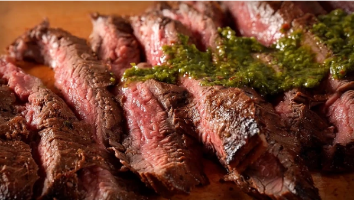

Pastel Cream Wafers
Create this melt-in-your-mouth memory of a cookie from Betty Crocker's original cookie cookbook.
Ingredients
Wafers
- 2 cups Gold Medal™ all-purpose flour
- 1 cup butter, softened
- 1/3 cup whipping (heavy) cream
- Granulated sugar for sprinkling on cookies
Cream Filling
- 1 1/2 cups powdered sugar
- 1/2 cup softened butter
- 1 tsp vanilla
- Food coloring
Cooking Instructions
- In medium bowl, mix flour, 1 cup butter and the whipping cream with spoon. Cover and refrigerate about 1 hour or until firm.
- Heat oven to 375°F. Roll one-third of dough at a time 1/8-inch thick on lightly floured surface.
- (Keep remaining dough refrigerated until ready to roll.) Cut with 2 1/4 -inch heart shaped cookie cutter.
- Generously cover large piece of waxed paper with granulated sugar. Transfer cutouts to waxed paper using pancake turner.
- Turn each cutout to coat both sides. Place on ungreased cookie sheet. Prick each cutout with fork about 4 times.
- Bake 7 to 9 minutes or just until set but not brown. Cool 1 minute; remove from cookie sheets. Cool completely, about 15 minutes.
- Meanwhile, beat powdered sugar and butter until smooth. Add vanilla. Beat until fluffy. Divide frosting into six small bowls.
- Add the following different amounts of red liquid food color to one of each of the bowls starting with a toothpick, 1 drop, 3 drops,
7 drops, 12 drops and 25 drops to make different shades of pink.
- For each sandwich cookie, spread about 1 teaspoon frosting on bottom of 1 cooled cookie. Top with second cookie, bottom side down;
gently press cookies together.